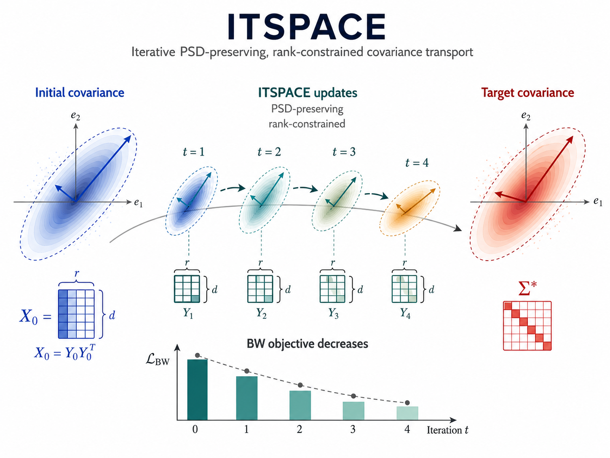
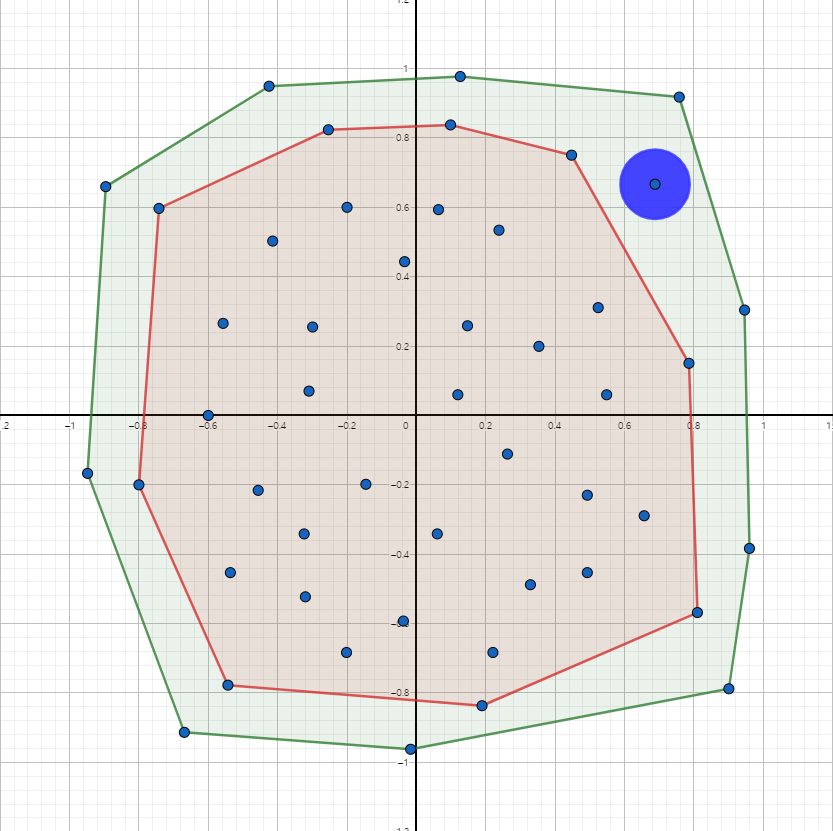
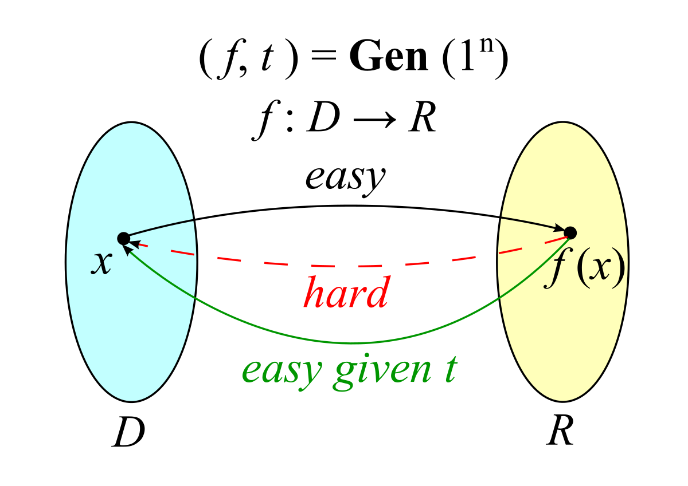
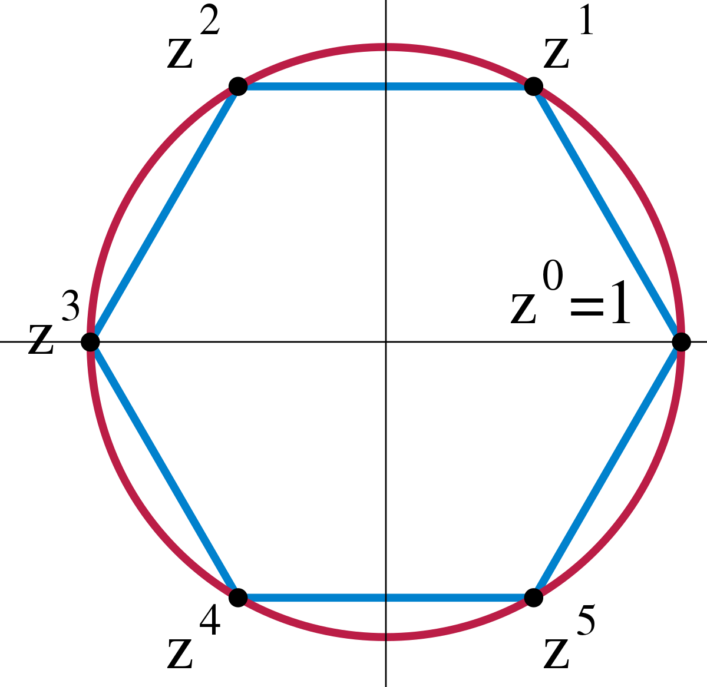
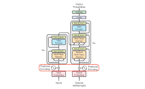
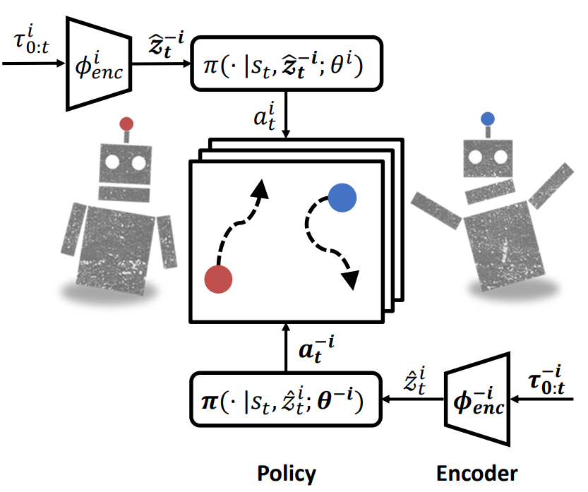
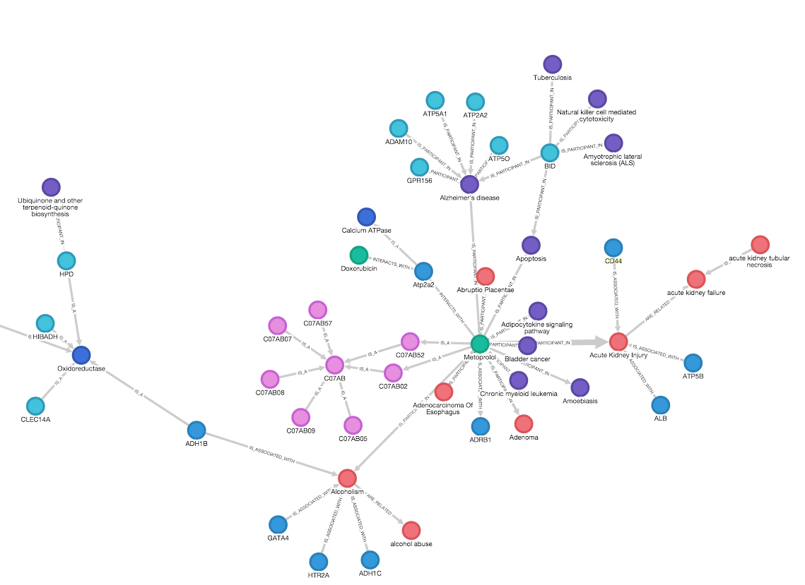

|
Woojoo Na
I am a PhD student in Electrical and Computer Engineering at Northeastern University, advised by Professor Jennifer Dy.
I trained as a pure mathematician at Oxford, and I approach machine learning through the lens of geometry and topology: many hard problems become tractable once you find the right space, the right shape of the feasible set, or the right path. I use that structure to design algorithms with guarantees, across several areas of machine learning:
- Large language model inference. Routing in mixture-of-experts models, where each token's route is a point in a simplex of expert patterns. When is a routing rule optimal, and how can every device stay balanced on every batch without retraining or dropping tokens? I study this in theory and on open MoE models with recorded user-conversation traffic.
- Optimal transport. Monotone, descent-guaranteed updates on the Bures–Wasserstein geometry of covariance matrices (ITSPACE, ICML 2026).
- Generative modeling. One-step generation by consistency training: which noise levels a fixed training budget should be spent on, and why a small loss can still leave a poor generator.
At Oxford, I did undergraduate research with Professor Christophe Petit, Professor Thomas Lukasiewicz, and Dr. Andrey Kormilitzin.
Email /
CV /
Google Scholar /
GitHub
|
|
|

|
ITSPACE: Monotone Gaussian Optimal Transport Updates
Woojoo Na, Jennifer Dy
International Conference on Machine Learning (ICML), 2026
OpenReview / arXiv
A proximal majorization–minimization method for the exact Bures–Wasserstein (Gaussian W2) objective on covariances, with closed-form updates in a square-root factorization. Each iteration is guaranteed to decrease the objective in exact arithmetic, with a certificate-gap bound under inexact polar computations; the updates preserve positive semidefiniteness and support rank-restricted factors. On real-world covariance-alignment benchmarks, ITSPACE reaches low-BW-gap solutions substantially faster than BW gradient descent and sample-OT baselines.
|
|

|
RACH-Space: Reconstructing Adaptive Convex Hull Space with Applications in Weak Supervision
Woojoo Na, Abiy Tasissa
arXiv preprint, 2023
arXiv
An algorithm for labeling unlabeled data in weakly supervised learning from incomplete, noisy information about the labels, based on reconstructing an adaptive convex hull. It reported state-of-the-art performance on the weak-supervision benchmark tasks considered at the time.
|
|
Earlier Projects
Undergraduate and master's-level research and course projects, kept here for the record.
|
|

|
Trapdoor attacks on Cayley hash function parameters
Alexander Allin, Woojoo Na, Christophe Petit
17th IMA International Conference on Cryptography and Coding (IMACC 2019) · conference
Using group-theoretic properties of Cayley hash functions to construct trapdoor attacks on their parameters. Undergraduate research at the Oxford Mathematical Institute.
|
|

|
P2-equivariant convolutional networks on MNIST
Machine learning course project, 2022
Studied the framework of group-equivariant CNNs, its applications and limitations, with experiments on MNIST.
|
|
|
Fake news detection and its impact on financial markets
Brigade Commander Award, Republic of Korea Army start-up competition, 2021
An online platform for fake-news detection with neural models, aimed at small investors exposed to fake news.
|
|

|
Conceptual space of a transformer encoder
Undergraduate summer research, Oxford Computer Science (Thomas Lukasiewicz), 2019
Explored the relationship between transformer encoder word embeddings and conceptual-space geometry.
|
|

|
2018 n2c2 challenge: adverse drug events and medication extraction
Woojoo Na, Andrey Kormilitzin · undergraduate poster session, Oxford Mathematical Institute, 2018 · n2c2
CNN and character-level word-embedding models for concept and relation extraction from electronic health records.
|
|

|
Knowledge graph completion
Undergraduate summer research, Oxford Computer Science (Thomas Lukasiewicz), 2018
Knowledge graph completion for ontology reasoning.
|
|